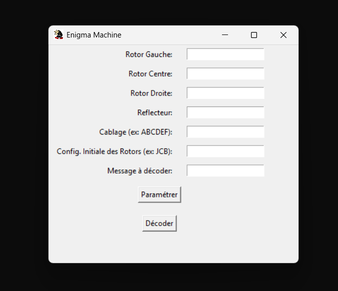

La programmation
Ah là là... Que dire de la programmation, quand on sait que j'avais 4 de moyenne en spé NSI
au premier trimestre de première.
Eh bien, pas grand‑chose à part que je lui ai cassé les genoux avec mon 16 au bac.
Non mais il se prenait pour qui, ce mec qui s'appelait Python, pour m'insulter avec des messages en rouge chaque fois que je lançais mon code ?
Plus sérieusement :
Python : Machine Enigma
Pour mon projet Python, j’ai recréé la célèbre Machine Enigma avec une interface graphique ultra minimaliste. C’était ma première approche sérieuse d’un projet graphique et même si le design est très simple, il permet de visualiser le chiffrement et le déchiffrement en temps réel.
 Télécharger le projet (.zip)C# : RPG 2D - Yggdrasil Chronicle
En C#, j’ai mené le projet de jeu vidéo Yggdrasil Chronicle, un RPG 2D réalisé sous Unity. Ce projet m’a permis de respecter un cahier des charges strict, de travailler en équipe, de tenir les deadlines et de préparer une soutenance orale. La création du gameplay, des quêtes et de l’univers graphique a été entièrement gérée par notre équipe. (On ne va pas se mentir, le jeu n'est absolument pas fini mais il reste cool)
C : Projet OCR
En C, je prépare un projet OCR dont le but sera de créer une IA capable de corriger des sudokus automatiquement. Pour l’instant, le projet est encore en travaux, mais il promet d’être ambitieux : « restez connectés, ça arrive en force ».
[Image en cours de réalisation]
En annexe : FemClicker (AR, projet maudit)
Et enfin, le projet maudit FemClicker en réalité augmentée. (Tout est dans le nom) Un truc bien goofy qui n'aurait pas dû exister mais on a bien rigolé en le faisant
Vous n'aurez pas l'apk de ce truc maudit ^^.